비서-1급 (2014-11-09 기출문제)
1과목: 비서실무
1. 최근 회사에서 안전관리를 강조하는 공문이 각 부처별로 전달되고 있다. 재난을 대비하여 평소 사무실 관리자로서 비서가 주도적으로 수행할 수 있는 업무의 내용으로 가장 부적절한 것은?
- 재난이나 위기 대처 매뉴얼 작성을 위한 자료수집
- 회사 구성원들의 비상연락망 작성 및 점검
- 위기 시 대응 조직도 재구축
- 위기 대처 훈련이나 교육 프로그램 이행을 위한 건의 및 준비
(정답률: 69%)

2. 한비서는 미국으로 출장예정인 상사를 위해 ESTA(Electronic System for Travel Authorization)를 발급하고자 한다. 다음 중 ESTA에 대한 설명으로 옳지 않은 것은?
- ESTA를 발급해서 여행할 수 있는 기간은 90일 이하이다.
- ESTA를 발급받으려면 비자 면제 프로그램에 참여하는 국가의 국민이거나 자격 있는 동포이어야만 한다.
- ESTA의 유효기간은 1년이다.
- ESTA를 발급받아 미국을 방문할 수 있는 목적은 단기 사업(for temporary business)상 혹은 관광 목적인 경우에만 발급가능하다.
(정답률: 54%)
3. 다음은 명함을 읽은 것이다. 한자의 음이 잘못된 것은?
- 大韓物産 株式會社 - 대한물산 주식회사
- 法務 - 법무
- 顧問辯護士 - 자문변호사
- 李 承 哲 - 이 승 철
(정답률: 50%)
4. 김비서는 새로 부임한 상사와 다음과 같은 업무갈등을 느끼고 있다. 이를 해결하기 위한 방안으로 가장 바람직하지 않은 것은?
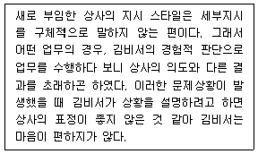
- 새로 부임한 상사의 언어 습관을 관찰하여 이를 수용하고자 한다.
- 지시가 끝난 후에라도 명확하지 않은 경우 다시 한 번 복창하여 커뮤니케이션의 오해를 없앤다.
- 상사의 비언어적 커뮤니케이션을 관찰하면서 보고할 때는 결론부터 먼저 설명하고 상황설명의 정도를 파악한다.
- 전임상사와의 다름을 인정하고 상사가 불편해 하지 않도록 최소한의 업무관계를 유지하도록 노력한다.
(정답률: 57%)
5. 우리 회사에 사외에서 영입된 임원 관련 소개문을 작성하여 신문사에 전달하라는 상사의 지시를 받았다. 소개문에 포함될 내용으로 가장 부적절하게 짝지어진 것은?
- 영입된 임원의 사진과 업무개시일
- 새 임원의 직급명과 향후 업무 추진 계획
- 회사 인사 정책 취지 및 새 임원의 약력
- 우리 회사의 전화번호 및 홈페이지 주소
(정답률: 35%)
6. 다음은 8월 29일 금요일 한국기업 전무이사 비서인 강비서가 처리해야할 업무리스트이다. 업무처리 우선순위가 가장 바르게 나열된 것은?
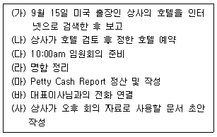
- (다) - (바) - (사) - (마) - (가) - (나) - (라)
- (다) - (바) - (가) - (사) - (나) - (마) - (라)
- (바) - (다) - (가) - (나) - (사) - (마) - (라)
- (바) - (다) - (마) - (사) - (가) - (나) - (라)
(정답률: 32%)
7. 다음은 행사를 위한 준비 작업에 대한 설명이다. 보기 중에서 가장 올바른 설명은?(7번 공통지문 문제)
- 초청범위가 정해지면 명단을 작성하여 동봉물 여부를 확인해서 초청장을 발송한다.
- 참석자 확인을 위한 회신내용에는 편의상 참석여부만 표시하게 한다.
- 초청장 동봉물 내용에는 회신서, 주차안내, 프로그램, 내빈 약력 등이 포함되어야 한다.
- 행사 개최 장소는 일관성을 위해 개최 때 마다 동일한 장소로 고정한다.
(정답률: 55%)
8. 다음 중 전문비서의 자세에 대한 설명으로 가장 적절하지 않은 것은?
- 직업의식을 갖춘 비서 : 자신의 직업을 평생직으로 삼고 주어진 일에 최선을 다할 뿐만 아니라 일을 찾아서 한다.
- 팀워크를 이룰 수 있는 비서 : 모든 임직원들과 유대관계를 강화하여 원만한 관계를 이루며 일하는 자세를 갖도록 한다.
- 경영자 의식이 있는 비서 : 경영자적 의식과 사고를 지니고, 상사 부재 시 상사의 업무범위 전반을 대행한다.
- 상사의 기대를 인지하는 비서 : 업무 수행 시에 상사의 지시가 없어도 상사가 어떻게 처리하기를 원하는지 파악 하여 상사의 의도대로 처리한다.
(정답률: 57%)
9. 한국물산은 외국에서 방문한 ABC사와 MOU 체결식을 하려고 한다. 단상 위에 놓을 각 나라의 국기 위치의 의전상 일반적인 의전으로 가장 바른 것은?
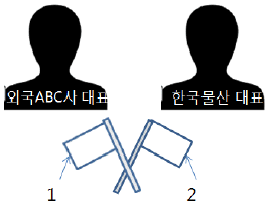
- 1번에 태극기, 2번에 외국 국기를 놓는다.
- 1번에 외국 국기, 2번에 태극기를 놓는다.
- 1,2번 모두 방문국가의 외국 국기를 놓는다.
- 상황에 따라 다르다.
(정답률: 37%)
10. 아래의 설명문을 토대로 상사에게 보고를 할 때 주의해야할 점으로 다음 중 가장 부적절한 설명은?
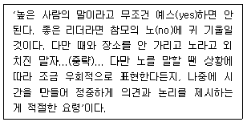
- 보고를 할 때에는 현상 파악과 아울러 경향을 분석하고 전망과 예측을 할 수 있도록 다양한 각도에서 보고한다.
- 기밀 사항이나 간단한 내용 등을 보고할 때에는 상사의 시간을 절약하기 위해 문서 보고가 적절하다.
- 전화 보고 시 짧은 시간 내에 보고 내용을 정확하게 전달하기 위해서 사전에 내용을 요약해 두는 것도 좋다.
- 구두로 보고를 할 경우 우선 보고할 수 있는 분위기를 조성하고 침착한 태도로 설명한다.
(정답률: 68%)
11. 김OO는 총무팀에 소속된 팀비서로 비품구매를 담당하고 있다. 비품구매 업무를 순서대로 나열한 것은?
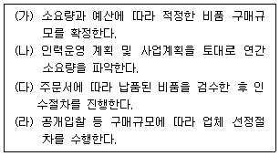
- (가) - (나) - (다) - (라)
- (나) - (가) - (다) - (라)
- (나) - (가) - (라) - (다)
- (가) - (나) - (라) - (다)
(정답률: 61%)
12. 홍보팀과 상사 대리자에게 아래 사항을 확인한 결과, 회사 홍보기사를 한밭신문에 게재하는 것이 진행 중임이 확인되었다. 이와 관련한 최 비서의 업무처리 방법으로 가장 적절 한 것은?
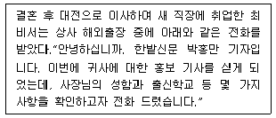
- 최 비서는 한밭신문에서 요구하는 상사의 모든 상세한 프로필 정보를 적극적으로 제공하여 우리 회사에 대한 좋은 이미지를 주도록 한다.
- 최 비서는 박 기자에게 상사의 최근 업적과 해외출장의 목적을 설명해 주며, 회사의 발전하는 모습이 부각되도록 홍보한다.
- 상사와 연락이 되지 않은 경우는 상사의 대리자와 상의하여 정보제공 범위를 결정하여 그 범위 내에서 제공한다.
- 회사 홍보기사와 관련된 세부사항의 변화가 있을 때에는 해외 출장 중인 상사에게 그 때마다 보고하여 신속하게 처리한다.
(정답률: 57%)
13. 위의 일정으로 떠난 상사 출장 중인 2월 18일에 약속이 되어 있지 않은 고객이 상사를 급히 만나서 논의를 할 것이 있다고 방문하였다. 이 때 윤비서의 업무처리가 다음 보기 중 가장 적절한 것은?(14번 공통지문 문제)
- 지금 상사는 파리에 출장 중이신 관계로 만나실 수 없으니 다음에 약속을 하고 방문해달라고 말한다.
- 상사가 2월 23일에 도착하니 그 이후에 약속을 하고 방문해 달라고 말한다.
- 급한 용무인 것 같아 상사에게 바로 전화를 연결해서 통화하게 한다.
- 상사가 없더라도 일단 접견실로 안내하여 구체적인 내용을 들어보고 판단한다.
(정답률: 32%)
14. 아래의 경조사 업무를 처리할 때 비서가 주의해야 할 점에 대한 설명으로 가장 적절하지 않은 것은?
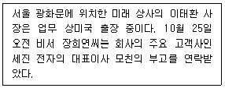
- 미국 출장 중인 사장님께 연락하여 어떻게 처리할지에 대한 지시를 받는다.
- 상사와 연락이 되지 않아, 상사의 업무 대리자와 의논하여 업무를 처리하였다.
- 장비서가 대신 조문하는 것으로 지시를 받으면, 조의금을 전달하고 상주에게 신분을 밝힌 후 조문한다.
- 상사가 출장에서 돌아온 후 직접 인사드린다고 하셔서 발인 일정에 맞추어 조위전보만 보낸다.
(정답률: 47%)
15. 다음 비서 직무의 특성에 대한 설명 중 가장 적절하지 않은 것은?
- 비서는 일의 특성상 주말이나 휴일에도 업무에서 완전히 벗어나 있기가 쉽지 않으므로, 언제 걸려올지 모르는 전화와 상사의 갑작스러운 호출에 항상 대비해야 한다.
- 비서는 업무 특성상 회사의 기밀사항이나 상사의 사적인 정보를 자주 접하게 된다. 그런데 만약 상사의 일정을 어느 누구에게도 말할 수 없는 상황이라면, 상사의 일정도 잘 모르는 무능한 비서가 되는 상황마저도 감수해야한다.
- 비서의 취업 분야는 전문분야별로 다양해서 적성에 맞는 분야에 일단 취업하게 되면 비서의 개인적인 능력에 따라 비서의 지위, 대우, 보수가 결정되는 경우가 많다.
- 비서의 직무는 경영자 업무의 능률화를 조성하는 역할을 수행하는 것이다.
(정답률: 37%)
16. 김 비서의 총무업무 처리방식에 관한 설명이다. 다음 설명 중 가장 적절하지 않은 것은?
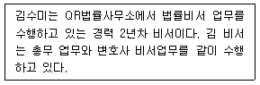
- 김비서는 상사의 소액 현금 관리 시 금전출납부를 만들거나 영수증과 같은 증빙서류는 따로 보관해야 된다.
- 회계부서가 따로 있는 사무소에서도 로펌비서는 재정에 관련된 기록들인 회계장부, 영수증, 전표 등을 관리하고 회계사의 업무를 보조하는 등의 재정 업무에 관여한다.
- 법 소송 업무와는 달리 자문 업무는 변호사들의 소요된 시간 및 실제 비용을 기준으로 비용이 산출되므로, 김 비서는 시간 기록 및 정리, 수임료 청구 및 회수의 업무를 처리하고 있다.
- 상사가 사용한 카드의 매출 전표는 일단 보관하고 있다가 은행에서 청구서가 도착하면 확인 후 폐기한다.
(정답률: 62%)
17. 비서는 업무의 우선순위를 정하기 위해 다음과 같은 기준을 사용하여 업무의 중요도와 긴급도를 분류할 수 있다. 각 영역에 해당하는 업무 중 김비서가 동료인 박비서에게 부탁하여 도움을 받을 수 있는 업무영역에 해당되는 업무 내용으로 가장 적당한 것은?
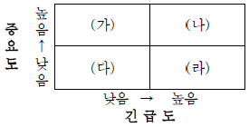
- (가)영역 : 상사 명함 정리
- (나)영역 : 업무에 필요한 새로운 문서 양식 만들기
- (다)영역 : 내방객 차 응대
- (라)영역 : 회의준비에 필요한 일반 자료 복사
(정답률: 39%)
18. 다음 중 홍비서의 회의관련 업무처리로 가장 적절한 것은?
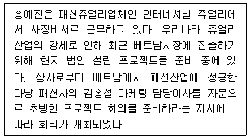
- 회의 개최 전에 다낭 패션사와 김홍설 마케팅 이사에 대한 정보를 조사하여 사장에게 보고하였다.
- 회의가 길어져서 중간에 다과를 제공하였다.
- 회의 자료는 대외비이므로 테이블 위에 놓고 가게 하여 따로 참석자에게 발송한다.
- 회의 중 우리 회사의 회장 비서실로부터 사장을 찾는다는 전화를 듣고, 중요한 프로젝트 회의 중이라 통화가 어려우니 회의 종료 후 전화 드린다고 했다.
(정답률: 60%)
2과목: 경영일반
19. 다음 중 e-비즈니스의 최근 발전경향에 대한 설명으로 가장 적절하지 않은 것은?
- 디지털경영은 텔레마케팅을 통해 고객에 관한 정보를 효과적으로 활용하는 경영활동을 의미한다.
- e-비즈니스에서 협력전략을 바탕으로한 전략적 아웃소싱이 중요한 사업부문이 된다.
- 기업 대 소비자(B to C)를 중심으로 발전한 인터넷 비즈니스는 기업 대 기업(B to B)과 기업 대 정부(B to G)로 발전하고 있다.
- 모바일 비즈니스는 기존 e-비즈니스와 무선인터넷을 결합한 개념으로 스마트폰의 보급으로 크게 활성화되고 있다.
(정답률: 40%)
20. 다음 중 조직계층에 따른 경영정보시스템의 구분에 대한 설명으로 가장 적절하지 않은 것은?
- 관리통제시스템은 조직의 말단부에서 이루어지는 일상 업무처리를 자동화하여 처리하는 시스템이다.
- 운영통제시스템은 규칙이나 절차에 따라 업무가 진행되도록 관리자를 지원하고 업무를 통제할 수 있게 한다.
- 전략계획시스템은 비반복적, 비구조적 업무의 수행을 위해 직관과 경험에 의한 의사결정을 지원한다.
- 거래처리시스템은 거래발생, 전표 입력, 보관 등 거래에 대한 모든 자료가 정리될 때까지의 정보를 처리한다.
(정답률: 37%)
21. 다음 중 기업이 사업 확장이나 창업을 위해 필요한 자금을 조달하는 방법에 대한 설명으로 가장 적절하지 않은 것은?
- 회사채는 장기 자본 조달을 목적으로 기업이 발행하며 채권자는 정해진 이자와 만기일에 원금을 받을 뿐 기업의 주요 의사결정에는 참여할 수 없다.
- 기업어음은 단기 자본 조달을 위해 발행하며 기업과 투자자 사이의 자금수급 관계를 고려하여 금리를 자율적으로 결정한다.
- 기업은 자기 신용이나 담보물을 근거로 은행에서 대출을 받는 은행차입을 통해 자금을 조달할 수 있다.
- 주식발행에서 우선주는 보통주에 비해 안전성이 떨어지지만 보통주 취득자보다 우선적 권리와 투표권이 주어진다.
(정답률: 42%)
22. 다음 중 인플레이션이 미치는 영향에 대한 설명으로 가장 적절하지 않은 것은?
- 인플레이션 초기에는 물가상승으로 소비가 증가하고 금리가 오르게 된다.
- 인플레이션 시기에는 국산품 가격의 하락으로 수출이 증가하고 수입 외제품 가격의 상대적인 상승으로 수입이 감소하여 상품무역에서 대체로 흑자가 난다.
- 인플레이션 상황에서 정부는 경기 대응을 위해 세금징수율을 올리는 정책을 펼 수 있다.
- 인플레이션 상황에서 실물자산을 보유한 사람이 유리하고 금융자산을 보유한 사람이 불리해진다.
(정답률: 44%)
23. 다음 중 리더십유형에 대한 설명으로 가장 적절한 것은?
- 피들러의 상황이론은 유인가, 수단성, 기대를 상황적 요소로 제시하고 이에 맞는 적합한 리더십 스타일을 파악한다.
- 거래적 리더십은 부하 내면의 동기부여보다는 부하의 성과에 따른 리더의 보상을 통한 외적인 동기부여를 강조한다.
- 서번트 리더십은 부하 스스로가 내적인 동기부여를 일으키게 자극을 주고 새로운 혁신과 비전을 제시한다.
- 경로-목표이론은 과업목표를 달성하기 위해 부하를 감독하는 직무중심적 리더의 행위를 강조한다.
(정답률: 30%)
24. 기업이 필요로 하는 지식의 창출과 활용은 지식의 전환 과정을 통해 더욱 활발해 진다. 지식변환활동 중 아래 설명에 해당하는 과정을 나타내는 용어로 가장 적절한 것은?
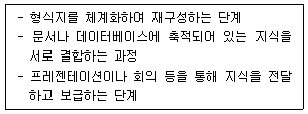
- 공동화
- 내면화
- 표출화
- 연결화
(정답률: 45%)
25. 다음에서 설명하는 용어로 가장 적절한 것은?
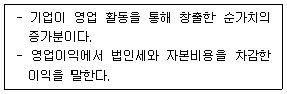
- EVA(경제적부가가치)
- ROE(자기자본이익률)
- ROA(자산수익률)
- ROI(투자자본수익률)
(정답률: 21%)
26. 다음 중 기업의 마케팅전략 수단인 가격관리에 대한 설명으로 가장 적절하지 않은 것은?
- 기업이 시장점유율을 높이거나 경쟁자의 시장침투를 제지하기 위해 가격결정을 할 경우에는 고가격전략을 선택하는 것이 유리하다.
- 제품에 대한 각 세분시장의 수요가 다를 때 고객별, 제품별, 시간별로 수요의 강도를 고려하여 가격차별화 전략을 구사할 수 있다.
- 기업의 가격결정에서 가격 하한선은 대체로 제품의 원가 구조에 의해 결정된다.
- 가격변화에 대해 수요가 탄력적일 경우 기업은 총수익을 높이기 위해 가격인하를 고려할 필요가 있다.
(정답률: 57%)
27. 다음 중 기업의 보상관리에 대한 설명으로 가장 적절한 것은?
- 기업의 임금체계는 각종 수당과 복리후생비를 제외한 기본금과 상여금으로 구성된다.
- 임금수준을 결정할 때 기업의 지불능력은 대체로 임금 하한선의 기준이 된다.
- 연공급은 연령과 근속연수가 많아짐에 따라 급여가 증가하는 임금체계이다.
- 법정복리후생의 내용은 노동조합과의 교섭에 따라 기업이 자율적으로 시행할 수 있다.
(정답률: 35%)
28. 다음의 커뮤니케이션 네트워크 형태에 대한 설명 중 가장 적절한 것은?
- 연쇄형(Chain)은 의사소통 경로가 자유롭고 널리 분산되어 있으므로 의사소통의 정확도가 낮다.
- Y자형은 강력한 리더에게 의사소통이 집중되는 경우로 의사소통의 속도가 빠르고 구성원의 만족도가 높게 나타난다.
- 원형(Circle)은 구성원의 서열이나 지위가 비슷하여 수평적 커뮤니케이션이 가능하므로 주로 위원회나 태스크포스 조직에서 형성된다.
- 완전연결형(All Channel)은 핵심정보가 리더를 중심으로 전달되어 의사소통의 정확도가 높지만 의사소통 속도가 느리다.
(정답률: 46%)
29. 다음 중 중소기업의 특성에 대한 설명으로 가장 적절한 것은?
- 중소기업은 기업규모가 작고 제품이 단순하기 때문에 경기변동에 따른 충격을 대기업에 비해 상대적으로 적게 받는다.
- 중소기업은 경영규모가 작기 때문에 금융이나 여신기관에서 자금을 조달하기가 수월하다.
- 중소기업은 원자재를 소량 구매함으로써 생산비용 측면에서 구매원가를 줄일 수 있어서 가격 경쟁에 유리하다.
- 중소기업은 대체로 소비자의 다양한 기호를 융통성 있게 충족시킬 수 있는 장점이 있어서 다품종 소량생산체제를하는 경향이 있다.
(정답률: 48%)
30. 다음 중 소유와 경영이 분리된 주식회사에서 나타날 수 있는 대리인 문제에 대한 설명으로 가장 적절하지 않은 것은?
- 정보의 불완전성 때문에 주주와 경영자간의 이해상충이 나타나며 이는 대리인 문제를 발생시킬 수 있다.
- 경영자의 대리인문제를 방지하기 위해 주주들은 사외이사제도나 외부회계감사제도 등을 통제장치로 운영한다.
- 주주는 대리인의 역선택과 도덕적 해이로 손해를 볼 수 있다.
- 경영자에 대한 스톡옵션의 지급은 주주-경영자 간의 대리인문제에서 발생되므로 주주의 입장에서 이를 바람직한 제도로 여기지 않는다.
(정답률: 70%)
31. 다음 중 벤처비즈니스에 투자하고 지원하는 벤처캐피탈에 대한 설명으로 가장 적절한 것은?
- 벤처캐피탈은 기업이 공개되기 전에 사업성이 높은 기업에 투자하는 개인 투자자를 말한다.
- 벤처캐피탈은 배당금보다는 소유주식의 매각으로부터 얻는 자본수익을 얻을 목적으로 투자한다.
- 벤처캐피탈은 투자심사에서 기업의 안정성, 재무상태 등을 중요시한다.
- 벤처캐피탈은 투자기업의 경영권 획득을 목적으로 투자 한다.
(정답률: 35%)
32. 다음 중 재무통제에 사용되는 재무분석비율에 대한 설명으로 가장 적절하지 않은 것은?
- 유동성비율은 기업의 단기채무 지불능력을 나타내는 판단비율이다.
- 수익성비율은 기업이 보유하고 있는 자원의 효율적 활용과 소요운영자금의 규모를 분석하는 지표이다.
- 안정성비율은 기업의 장기적 지불능력과 재무구조의 건실성 여부를 판단하는 지표이다.
- 성장성비율은 당해 연도의 기업의 경영규모와 기업활동 성과가 전년도에 비해 얼마나 증가하였는지를 나타내는 지표이다.
(정답률: 43%)
33. 다음 중 조직 구조에 대한 설명으로 가장 적절하지 않은 것은?
- 조직의 규모가 커지게 되면 조직 활동들이 분화하게 되어 복잡성이 증가한다.
- 기계적 조직은 권한이 집중되어 있고 규칙과 절차의 수가 적어 동태적 환경에 더 적합하다.
- 업무 내용이 복잡하고 불확실한 경우 조직 내 통제범위가 좁을수록 업무 효율성이 높아진다.
- 차별화 전략을 갖고 있는 기업은 상황 변화에 적절하게 대응하기 위해 유기적인 조직구조가 필요하다.
(정답률: 49%)
34. 다음 중 지주회사에 대한 설명으로 가장 적절한 것은?
- 지주회사와 자회사는 기업 간에 수평적으로 맺는 협정으로 법률적으로나 경제적으로 독립되어 있다.
- 지주회사는 자본에 의해 결합하는 기업집단화 유형 중 카르텔의 한 형태이다.
- 지주회사는 자회사의 경영권을 장악하기 위한 목적으로 해당 기업의 주식을 소유한다.
- 지주회사는 자회사간 순환출자구조를 형성함으로써 자금조달 비용을 절약할 수 있도록 한다.
(정답률: 45%)
35. A 기업에 다음과 같은 목표가 설정되었다. 이에 대한 설명으로 가장 적절하지 않은 것은?
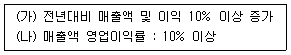
- (가)는 성장성 목표이다.
- (나)는 수익성 목표이다.
- (가)는 재무상태표를 이용해서 계산한다.
- (나)는 손익계산서를 이용해서 계산한다.
(정답률: 36%)
36. 다음에서 설명하는 용어로 가장 적절한 것은?
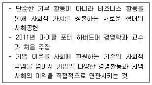
- 기업의 사회적 책임(CSR, Corporate Social Responsibility)
- 공유가치창출 (CSV, Creating Shared Value)
- 고객가치창출 (CCV, Creating Customer Value)
- 고객만족 (CS, Customer Satisfaction)
(정답률: 40%)
37. 다음 중 기업이 경쟁우위를 확보하기 위해 수립하는 경영전략 중 원가우위 전략에 대한 설명으로 가장 적절한 것은?
- 원가우위전략은 다품종 소량생산방식처럼 원가절감을 통해 해당산업에서 우위를 달성하는 전략이다.
- 첨단 생산시설 확보나 효율적인 유통시스템 등을 통하여 원가우위를 얻을 수 있다.
- 원가우위전략은 제품의 표준화 정도가 낮고 가격탄력성이 낮은 시장에서 차별화된 우위를 갖게 한다.
- 원가우위전략은 브랜드 충성도를 높여 타사와의 가격 경쟁에서 우위를 확보할 수 있도록 한다.
(정답률: 27%)
38. 다음 중 기업윤리에 대한 설명으로 가장 적절하지 않은 것은?
- 기업윤리의 준수가 단기적으로는 기업의 효율성을 저해 할 수 있지만 장기적 관점에서 조직 유효성을 확보할 수 있게 한다.
- 기업윤리는 조직구성원의 행동규범을 제시하고 건전한 시민으로서의 윤리적 성취감을 충족시켜준다.
- 기업윤리를 확립하기 위해 정부 및 공익단체의 권고와 감시활동이 필요하다.
- 기업윤리는 사회적 규범의 체계로서 수익성을 추구하는 경영활동과는 독립된 별개의 영역이므로 경영목표나 전략에 영향을 주지 않는다.
(정답률: 67%)
3과목: 사무영어
39. Belows are sets of English sentence translated into Korean. Choose the one which does not match correctly each other.
- According to the conference schedule, we break for lunch at 12:30. → 컨퍼런스일정에 의하면 우리는 12시 30분에 점심시간을 갖는다.
- When you get telephone calls, you should always have a pen and paper handy. → 전화를 받을 때는 항상 펜과 종이를 편리한 곳에 두어야한다.
- He suggested to correct the last paragraph of the report. → 그는 보고서의 마지막 문장을 삭제할 것을 제안했다.
- The secretary put me on hold for 10 minutes while she looked for the file. → 그 비서는 파일 찾는 동안 나를 10분이나 통화대기 시켰다.
(정답률: 55%)
40. Choose the term that the following passage refers to.
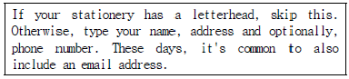
- inside address
- return address
- recipient's address
- permanent address
(정답률: 25%)
41. What is the most appropriate term for the blanks ⓐ and ⓑ?
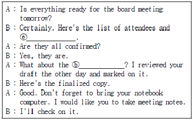
- ⓐ - participants, ⓑ - minutes
- ⓐ - board members, ⓑ - circular letter
- ⓐ - absentees, ⓑ - agenda
- ⓐ - managers, ⓑ - itinerary
(정답률: 39%)
42. Choose the statement which is not true in the following passage.
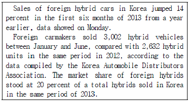
- Foreign carmakers sold about 3,000 hybrid cars in the first and second quarter of 2013.
- Sales of foreign hybrid cars in the first half year of 2013 increased by 14% compared with the same period in 2012.
- The total market size of hybrids reached roughly 15,000 units in the first half year of 2013.
- Foreign carmakers failed to make inroads to local hybrid market.
(정답률: 32%)
43. Which department should the following reference be suggest forwarded to?
- General Services Department
- Human Resource Department
- R&D Department
- Public Relations Department
(정답률: 31%)
44. Choose the set of words which complete the sentences most correctly.
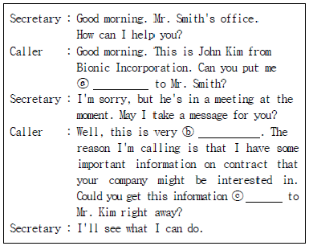
- ⓐthrough - ⓑannoying - ⓒback
- ⓐthrough - ⓑurgent - ⓒthrough
- ⓐalong - ⓑimmediate - ⓒdirect
- ⓐup - ⓑimportant - ⓒthrough
(정답률: 58%)
45. Choose the one which does not match each other.
- CKO : Chief Knowledge Officer(지식관리자)
- BCC : Blind Carbon Copy(숨은 참조인)
- TBA : To Be Announced(미정, 후에 알림)
- FTA : Free Trade Arrangement(자유무역협정)
(정답률: 32%)
46. Choose the statement that is not true according to the following dialogue.
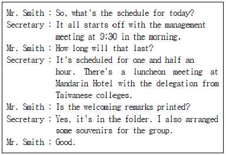
- Mr. Smith will have lunch with a group of ten people.
- A welcoming speech will be delivered by Mr. Smith.
- Some gifts will be distributed to the guests.
- Mandarin Hotel is the venue for the meeting with the Taiwanese delegation.
(정답률: 44%)
47. Choose the one word or phrase that best completes the sentence for the blank.
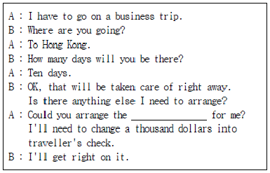
- reservation
- foreign currency
- factory tour
- airport limousine
(정답률: 60%)
48. What kind of letter is this?(50번 공통지문 문제)
- Letter of Appreciation
- Obituary Notice
- Letter of Condolence
- Letter of Credit
(정답률: 50%)
49. Which is not appropriate to replace sentence ⓐ?
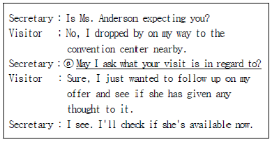
- May I ask what is the nature of your visit?
- May I ask you to give her my best regards?
- Could I ask what you want to see her about?
- May I ask what your visit is for?
(정답률: 43%)
50. Which of ⓐ~ⓓ has the source of the problem other than the telephone equipment?
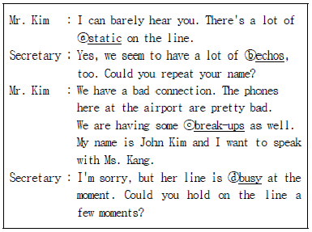
- ⓐ
- ⓑ
- ⓒ
- ⓓ
(정답률: 23%)
51. Read the following conversation, which of the followings is NOT true?
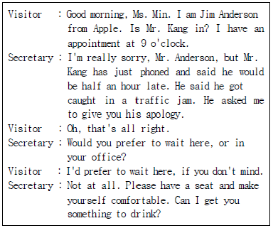
- Jim Anderson will be meeting with Mr. Kang in 30 minutes at Apple's office.
- Ms. Min is a secretary to Mr. Kang.
- Ms. Min conveyed Mr. Kang's message to Mr. Anderson.
- Jim Anderson accepted Mr. Kang's apology.
(정답률: 45%)
52. From the following envelope, which is NOT true?
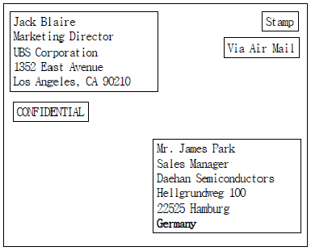
- This letter can be opened by any recipients.
- The sender of this letter works for UBS Corporation.
- The name of recipient is James Park.
- This letter is delivered from U.S.A to Germany by airplane.
(정답률: 59%)
53. Which of the followings is the most appropriate expression for the blanks ⓐ,ⓑ and ⓒ?
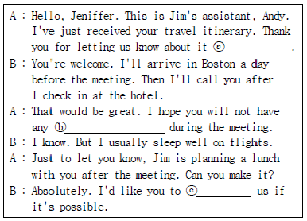
- ⓐ late in the day - ⓑ physical fatigue - ⓒ join
- ⓐ ahead of time - ⓑ physical fatigue - ⓒ go
- ⓐ ahead of time - ⓑ jet lag - ⓒ join
- ⓐ late in the day - ⓑ jet lag - ⓒ go
(정답률: 49%)
54. Which of the followings is NOT appropriate for the blank?
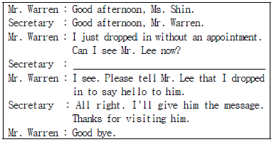
- I'm sorry, but Mr. Lee is in a meeting all afternoon.
- I'm sorry, but Mr. Lee just left the office. Would you like to leave a message?
- I don't think so, but he'll be glad to see you.
- No, I'm afraid he's out. Can I take a message?
(정답률: 47%)
55. Belows are sets of Korean Sentences translated into English. Choose the one which is NOT translated appropriately.
- I have just finished writing the sales status report. Please refer to it. → 매출 현황 보고서 작성을 방금 완료했습니다. 참조해 주십시오.
- The Finance Department is preparing a 'Budget and Economic Outlook' report. → 재무부에서 '예산 및 경제 동향' 보고서를 준비하고 있습니다.
- Can you do me a favor? I need someone to take over proofreading of this brochure. → 저에게 호의를 베풀어 주시면, 이 팸플릿을 먼저 읽어 드리도록 하겠습니다.
- I learned my lesson. I will not make this mistake again. → 교훈을 얻었습니다. 이런 실수는 두 번 다시 하지 않겠습니다.
(정답률: 60%)
56. According to the dialogue, which of the followings is NOT true?
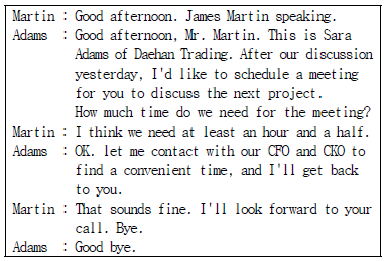
- Mr. Martin had a talk with Sara Adams yesterday.
- They need thirty minutes to discuss the next project.
- Ms. Adams will get in touch with her colleagues.
- The time for the meeting is yet to be determined.
(정답률: 40%)
57. Read the following telephone conversation and choose the set which arranges the letter most appropriately.
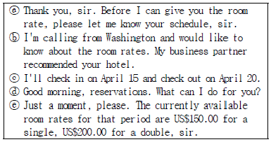
- ⓑ → ⓓ → ⓒ → ⓔ → ⓐ
- ⓓ → ⓐ → ⓑ → ⓒ → ⓔ
- ⓑ → ⓓ → ⓐ → ⓔ → ⓒ
- ⓓ → ⓑ → ⓐ → ⓒ → ⓔ
(정답률: 55%)
4과목: 사무정보관리
58. 다음은 특정일자의 외환시세표이다. 아래 표에 대한 설명으로 가장 옳지 않은 것은?
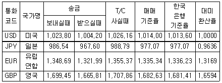
- 유럽에서 100유로를 송금하면, 132,199원을 받을 수 있다.
- 고객이 여행자 수표로 USD100달러를 사기 위해서는 102,616원이 필요하다.
- 대미환산율을 고려해볼 때 1.3169달러가 1유로에 해당한다.
- 대미환산율을 고려해볼 때 1달러는 1.6594파운드에 해당한다.
(정답률: 32%)
59. MS Outlook에서 뉴스 사이트나 블로그를 구독하는 서비스로 피드를 추가하면 전자메일 읽기와 비슷하게 정보를 받아볼 수 있다. 이러한 서비스를 무엇이라고 하는가?
- RSS
- MO
- NIE
(정답률: 52%)
60. 다음은 OECD 주요국 고령화속도 순위에 대한 그래프이다. 이에 대한 설명 중 가장 적절한 것은?
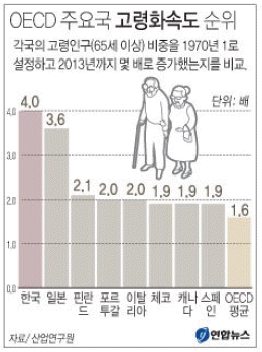
- 2013년 기준 한국의 고령인구 비중은 OECD 주요 8개국 중 1위이다.
- 2013년 기준 한국의 고령화속도는 OECD 주요 8개국 중 1위이다.
- 2013년 기준 한국의 고령화속도는 OECD 평균속도보다 2배 높다.
- 2013년 기준 한국의 고령인구가 일본의 노령인구보다 많다.
(정답률: 50%)
61. 다음은 늘푸른 테니스회 모임의 회원명단이다. 적당한 분류법에 대한 설명 중 가장 적절한 것은?
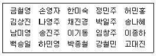
- 남녀 구분한 후 명칭별로 정리하여 색인 카드가 필요하다.
- 지역별로 분류한 다음에 명칭별로 구분하여 장소에 따른 문서의 집합이 가능하다.
- 명칭별 분류에 따라 정리하여 색인이 불필요하다.
- 주민등록번호별 정리방법을 이용하여 회원의 보안성을 유지하도록 한다.
(정답률: 28%)
62. 관계형 데이터베이스에서 기본키의 특성은?
- 공유성
- 중복성
- 기밀성
- 식별성
(정답률: 28%)
63. 다음 중 그룹웨어에 대한 설명으로 가장 거리가 먼 것은?
- 공동작업을 하는 구성원들의 업무 생산성을 향상시킬 수 있다.
- 원격지에 있는 조직구성원들의 협동작업을 가능하게 하는 시스템이다.
- 전자 상거래 데이터의 교환 및 공유를 위한 세계적인 표준이다.
- 전자메일, 문서, 전자게시판, 일정관리, 커뮤니티 등에서 정보를 공유한다.
(정답률: 57%)
64. 김비서가 웹으로 접속하지 않고 다른 방법으로 네이버 메일을 확인하려고 한다. 이를 위한 방법으로 가장 적절하지 않은 것은?
- MS-Outlook에서 POP3/SMTP를 설정한다.
- 스마트폰을 이용하여 IMAP/SMTP를 설정한다.
- Outlook Express를 이용해서 보내는 서버 주소와 받는 서버 주소를 설정한다.
- ODBC를 설정해서 어떤 데이터베이스이든지 자유롭게 접근하도록 설정한다.
(정답률: 47%)
65. 다음 문서에 관한 설명으로 가장 옳지 않은 것은?
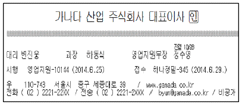
- 가나다 산업 주식회사 대표이사는 발신기관의 장이다.
- 정수영 영업지원부장이 대표이사 부재 시 직무를 대행한 결재이다.
- 가나다 산업(주) 영업지원부에서 보낸 문서이다.
- 본 문서는 일반에게 공개되어서는 안 된다.
(정답률: 47%)
66. 다음 중 전자문서관리시스템에 관한 설명으로 가장 적절하지 않은 것은?
- 컴퓨터 프로그램과 저장 장치를 이용하여 기업 내의 여러 종류의 문서들을 관리하는 것이다.
- 기업 내 사용자들이 문서를 만들어 저장, 출력, 처리하는 것이다.
- 전자적 방식으로 작성된 문서를 대상으로 하며, 추후 전자화된 문서는 배제하는 것이 원칙이다.
- 텍스트 형태뿐만 아니라 이미지·비디오·오디오 형태의 문서를 관리한다.
(정답률: 58%)
67. 문서정리를 하는 김비서의 행동 중 가장 부적절한 것은?
- 문서를 보관하기 위해 2단식 파일캐비닛을 구매했다.
- 거래처파일을 명칭별로 정리하기 위해 가이드의 탭에 ㄱ,ㄴ,ㄷ 등을 표시했다.
- 파일캐비닛 안에 문서를 넣기 위해 행거식 폴더를 구매했다.
- 잡건의 취급을 위해 색인카드를 만들었다.
(정답률: 35%)
68. 한강그룹의 김비서는 선정된 고객 1,000명에게 제품 팜플렛과 안내문을 우편발송하려고 한다. 편지 병합을 이용한 업무처리가 가장 적절하지 않은 것은?
- 고객명단에서 선정된 1,000명의 주소와 이름을 엑셀에 저장하여 데이터파일로 사용한다.
- 파워포인트에서 디자인을 하고 편집병합을 이용하여 이름을 입력한 안내문을 완성한다.
- MS-Publisher에서 편지병합을 이용하여 팜플렛에 고객이름을 입력한다.
- 병합된 주소와 이름을 편지봉투에 직접 인쇄한다.
(정답률: 34%)
69. 다음은 어떤 용어에 대한 설명이다. 무엇에 관한 설명인지순서대로 나열하시오.
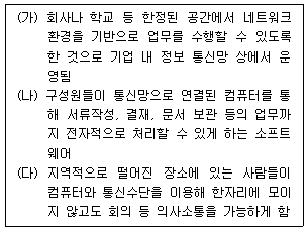
- 인트라넷 - 그룹웨어 - 원격회의시스템
- 그룹웨어 - 인트라넷 - 화상회의시스템
- 엑스트라넷 - 그룹웨어 - 화상회의시스템
- 인트라넷 - 이메일 - 원격회의시스템
(정답률: 54%)
70. 다음은 최근에 자주 발생하는 신종 금융범죄로 인한 피해 내용이다. 이 피해를 입힌 범죄에 해당하는 것은 무엇인가?
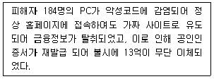
- 피싱(Phishing)
- 파밍(Pharming)
- 스미싱(Smishing)
- 디도스(DDos)
(정답률: 31%)
71. 다음은 전자상거래 모델에 대한 설명이다. 맞게 짝지어진 것을 고르시오.
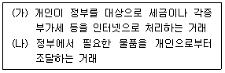
- (가)C2G - (나)C2G
- (가)G2C - (나)G2C
- (가)C2G - (나)G2C
- (가)G2C - (나)C2G
(정답률: 56%)
72. 홈쇼핑회사에 다니는 김비서는 자사의 판매제품에 대한 소비자의 의견을 알아보기 위해 소비자의 주소지로 요구조사지를 발송하고, 소비자는 이 요구조사지를 작성한 후 자사로 발송하도록 하려고 한다. 다음 중 소비자가 우편요금을 부담하지 않고 받는 사람이 우편요금을 부담하는, 김비서가 사용할 수 있는 가장 적절한 우편서비스는?
- 수취인 후납부담
- 내용증명
- 요금별납
- 요금후납
(정답률: 42%)
73. 다음 중 효과적인 프레젠테이션을 위한 시각자료 작성 시 유의사항으로 바르게 설명된 것끼리 짝지어진 것은?
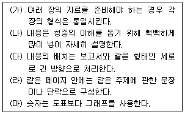
- (가), (다), (라)
- (가), (나), (라)
- (나), (다), (마)
- (가), (라), (마)
(정답률: 64%)
74. 문서 제본기에는 여러 가지 종류가 있는데, 다음 중 열접착제본기의 특징을 모두 고르시오.
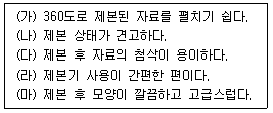
- (가), (나), (다)
- (나), (다), (라)
- (나), (다), (마)
- (라), (마)
(정답률: 37%)
75. 다음은 공문서 결문의 일부분이다. 다음 중 잘못 설명된 것은 무엇인가?
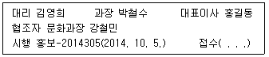
- 이 공문서를 기안한 사람은 김영희 대리이다.
- 이 공문서가 제대로 작성 되었는지 검토한 사람은 박철수과장이다.
- 이 공문서의 결재자는 홍길동 대표이사이다.
- 김영희가 근무하는 부서는 문화과이다.
(정답률: 57%)
76. 다음 중 발신 문서의 처리방법에 대한 설명으로 가장 옳지 않은 것은?
- 특별 우편물은 편지 본문 오른쪽 상단에 특별 우편물 표시를 한다.
- 발신문서는 복사본을 만들어 보관하며, 발신기록부를 만들어 기록해 둔다.
- 기밀을 요하는 경우에는 사내문서라 할지라도 봉투를 봉하여 전달한다.
- 발송 문서의 양이 많은 경우에는 요금 별납 혹은 요금후납이 인쇄되어 있는 봉투를 사용하거나 스탬프를 찍는다.
(정답률: 38%)
77. 다음 중 사무실 내에서 발생되는 소음을 줄일 수 있는 방법을 모두 고른 것은?
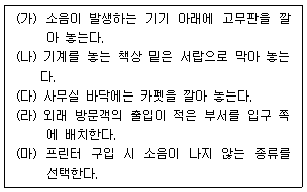
- (가), (나), (다), (라), (마)
- (가), (나), (다), (마)
- (나), (다), (라)
- (가), (다), (마)
(정답률: 36%)